|
| Anno 1767 | |||
|
Ritorna all'indice delle parrocchie Il numero abbinato ad ogni famiglia indica la relativa posizione nello Stato delle Anime 1 - Prete Giovanni Baccioni - Paroco di questa Parrocchia 2 - Salvadori Matteo - va a opera sopra i terreni 3 - Angiolini Girolamo - lavoratore di terreni mezzaiolo 4 - Tempini Giuseppe - lavoratore di terreni mezzaiolo - 12 5 - Centini Giovanni Savino - fattore proprietario e lavoratore di terreni - 10 6 - Fineschi Pavolo - contadino e va a opera ai boschi e terreni 7 - Brandani Giuseppe - lavoratore di terreni mezzaiolo - 14 8 - Sani Antonio - lavoratore di terreni mezzaiolo - 13 9 - Pavolini Lorenzo - lavoratore di terreni mezzaiolo - 12 10 - Vagheggini Francesco - lavoratore di terreni mezzaiolo - 15 11 - Rustici Giovanni - lavoratore di terreni mezzaiolo 12 - Mussi Giovanni Battista - fattore 12 - Bocci Maria Angiola - vedova - fattoressa - coabita conl fattore Mussi Giovanni Battista 13 - Pericciuoli Santi - lavoratore di terreni mezzaiolo - 13 14 - Corsini Bernardino - maestro di bottaio 15 - Galardi Antonio - lavoratore di terreni mezzaiolo - 19 16 - Lotti Giovanni - va a opera sopra i terreni 17 - Rocchigiani Giuseppe - va a opera sopra i terreni 18 - Tommi Archangiolo - padrone d'osteria e di macellaro - 10 20 - Viligiardi Giovanni Battista - maestro di fabbro 21 - Chelotti Antonio - va a opera sopra i terreni 22 - Cenni Pavolo - va a opera sopra i terreni 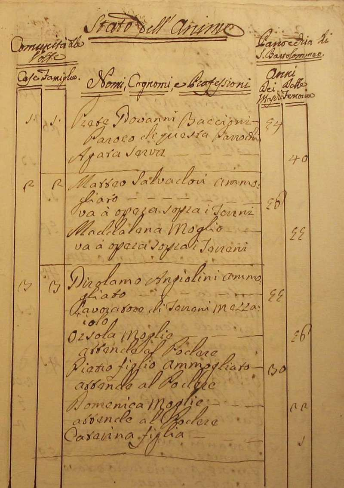 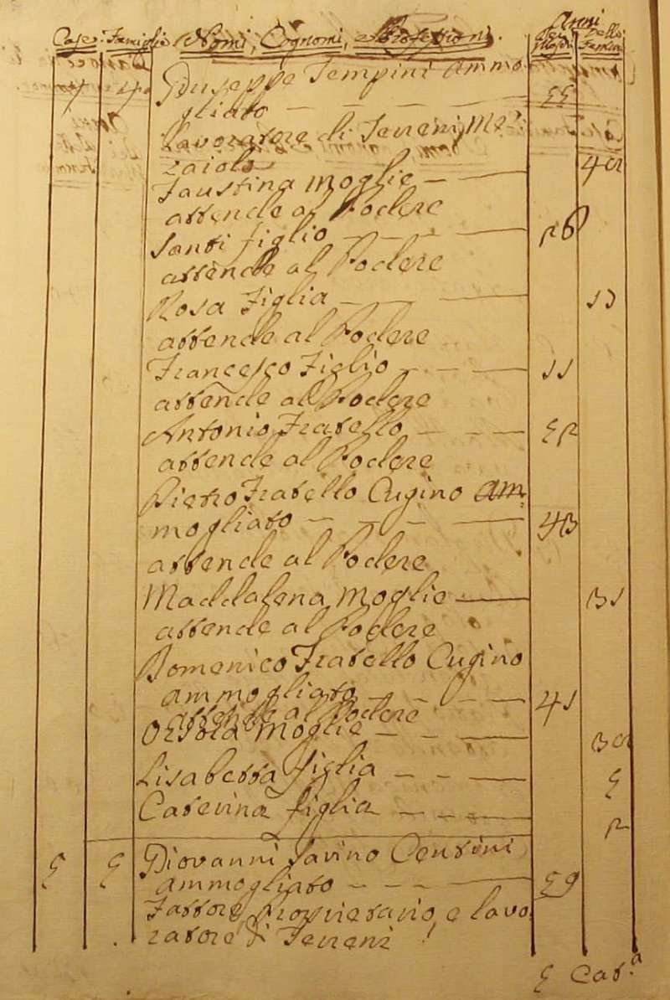 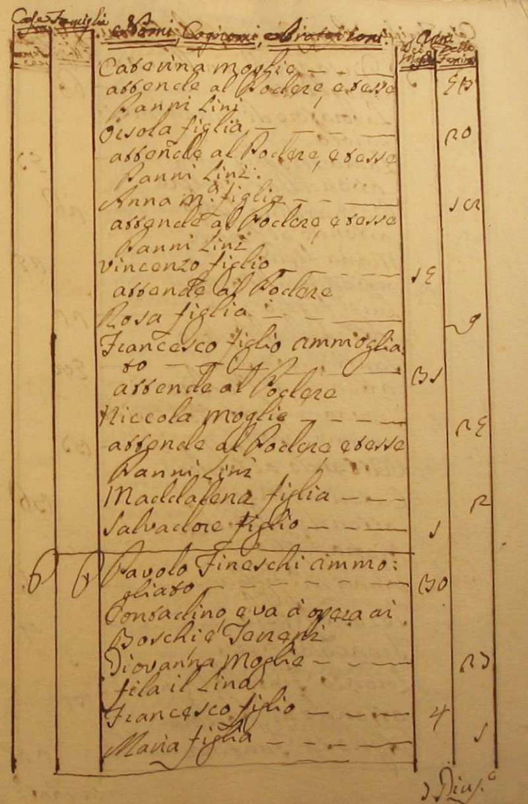 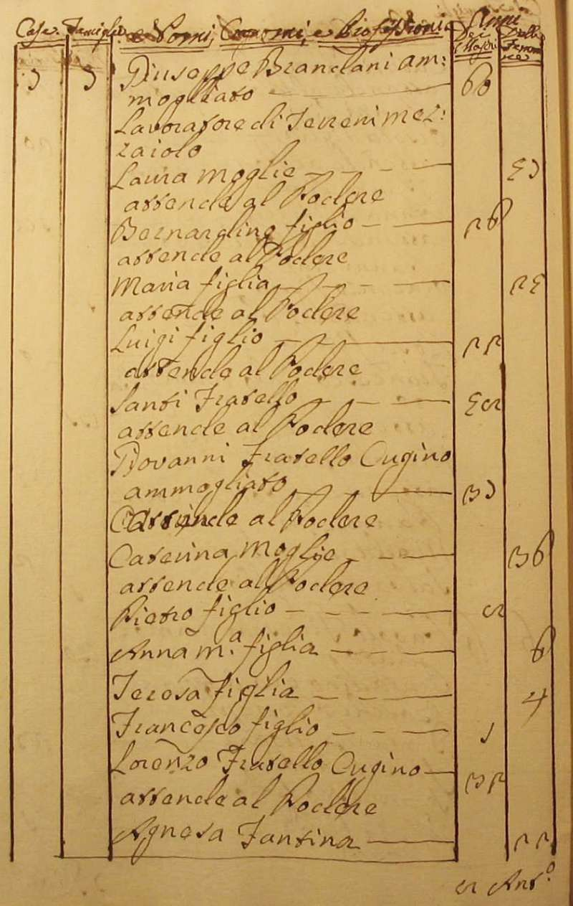 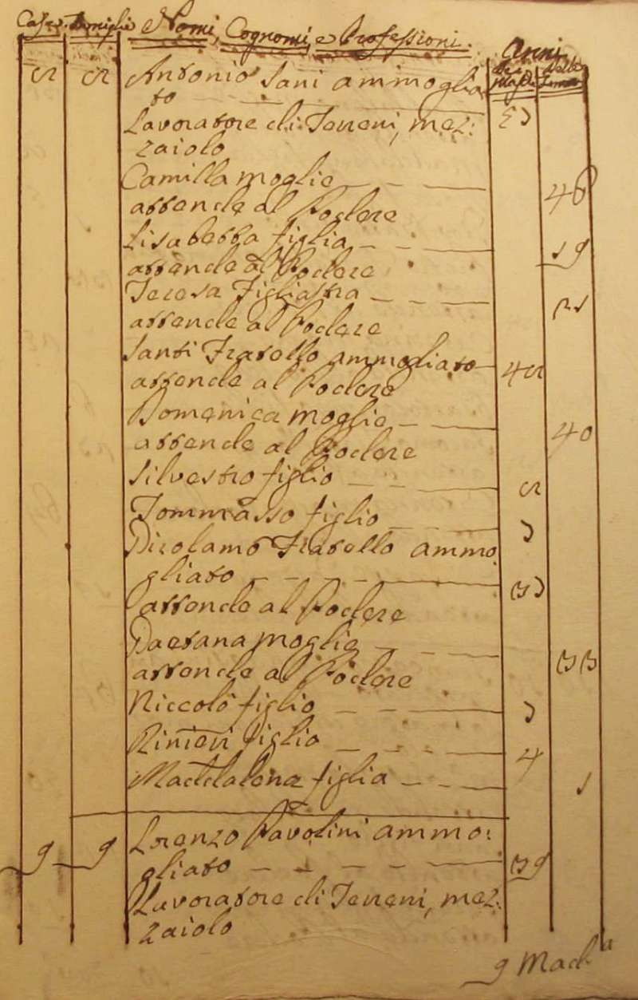 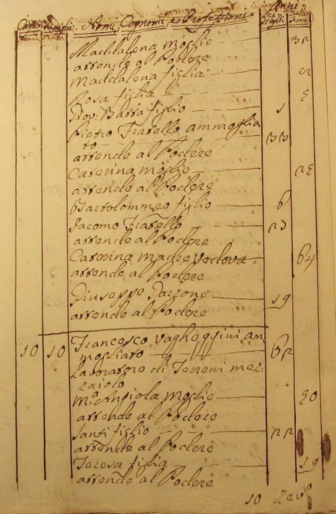 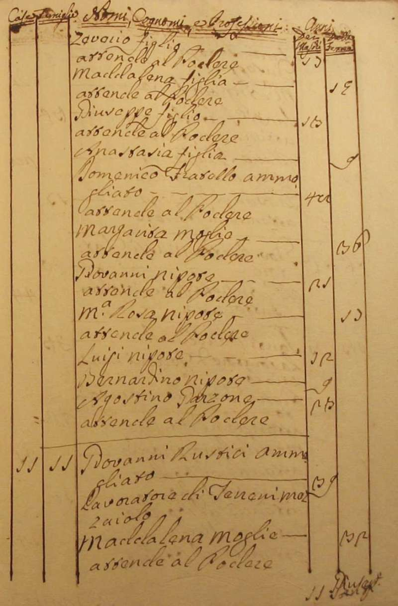 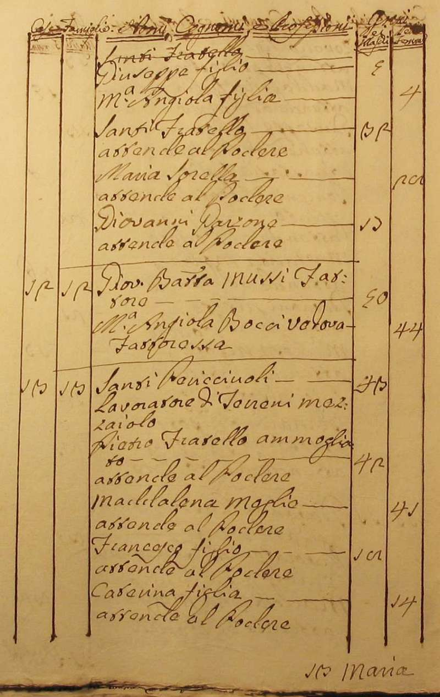 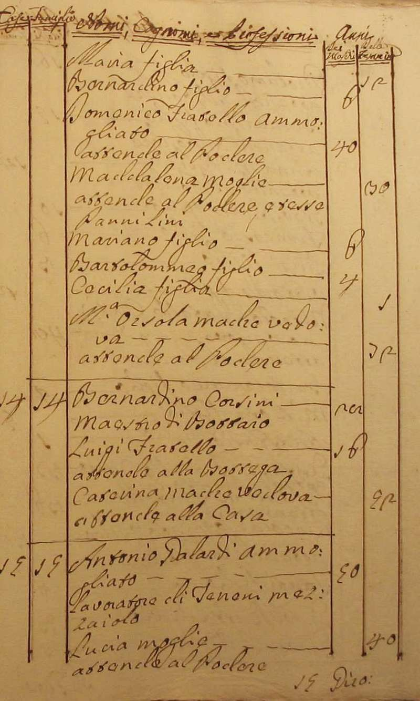 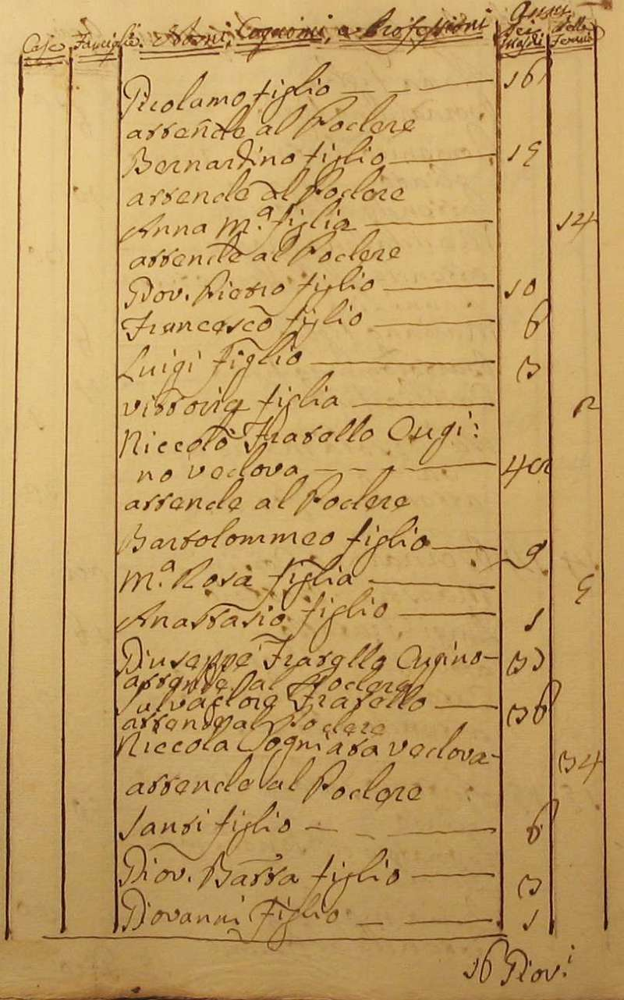 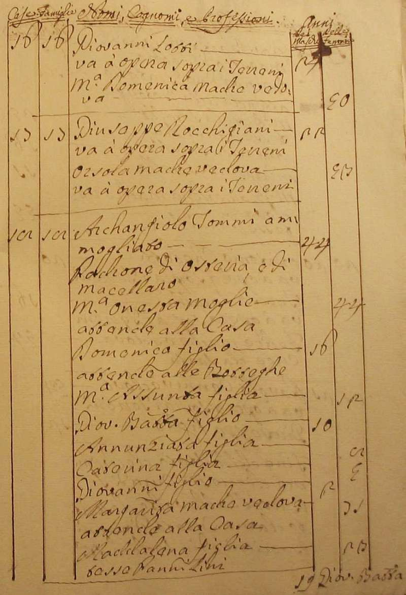 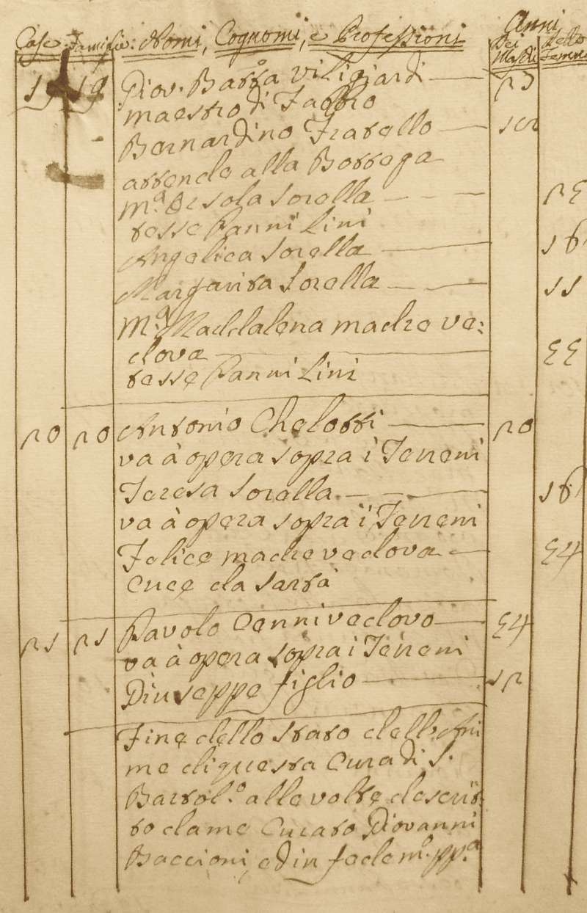 Ritorna all'indice delle parrocchie |